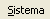
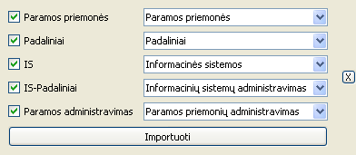

- Atidaryti bylos pasirinkimo langą vienu iš būdų:
- Pagrindinėje įrankių juostoje paspausti mygtuką

- Meniu juostos skiltyje  paspausti mygtuką
- Bet kuriuo metu paspausti „Ctrl+I“.
- Pasirinkti bylą su duomenimis, kuriuos norima importuoti.
- Paspausti mygtuką „Open“. 
- Pasirinkti kuriuos bylos lakštus norima importuoti.
- Pasirinkti į kurias lenteles importuoti konkrečius bylos lakštus.
- Spausti mygtuką „Importuoti“.